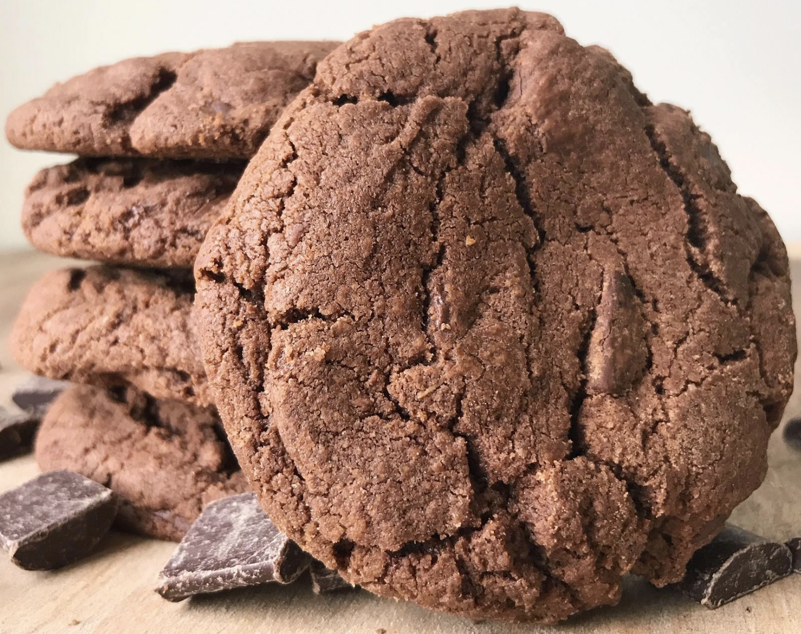
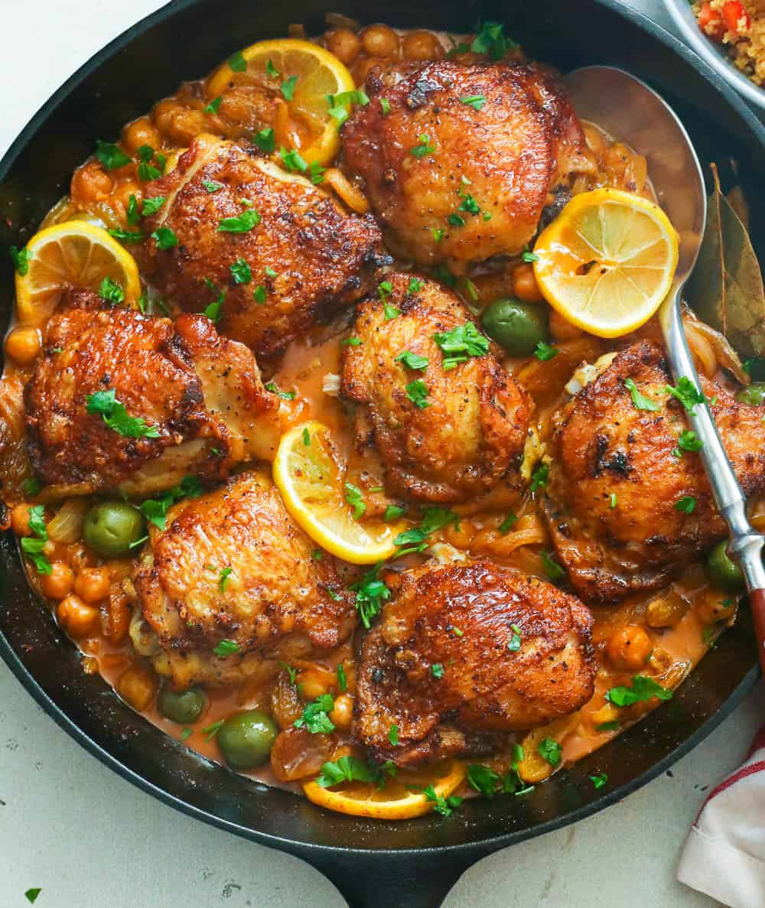
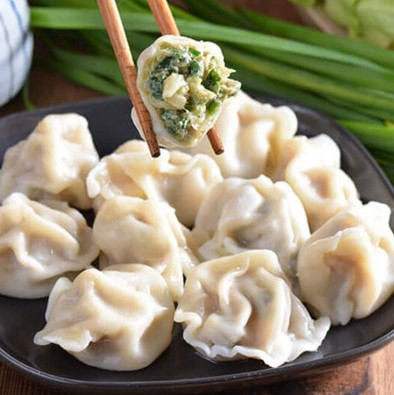

Origin: MichiganSource: Family RecipeCategory: Dessert

My daughter learned to make these cookies at a baking camp at Zingermanns and has tweaked the recipe to fit the taste buds of her siblings. They are extremely sugary so the salt helps to balance it. Note, these cookies are best eaten very quickly.
1/2 cup unsalted butter, softened
3/4 cup granulated sugar
3/4 cup packed light or dark brown sugar
1 large egg
2 teaspoons pure vanilla extract
1 cup semi-sweet chocolate chunks (melted)
2 cups all-purpose flour
1/2 cup natural unsweetened cocoa powder
1 teaspoon baking soda
1/2 teaspoon salt
1 cup semi-sweet chocolate chunks (unmelted)
Cream together the butter, granulated sugar, and brown sugar in a mixing bowl.
Beat in the egg and vanilla extract.
Stir in the melted chocolate.
In a separate bowl, whisk together the flour, cocoa powder, baking soda, and salt.
Gradually combine the wet and dry ingredients.
Fold in the unmelted chocolate chunks.
Form the dough into 15 cookies and place them on a baking sheet.
Bake at 350 degrees Fahrenheit for 12 to 13 minutes.
Moroccan Chicken Tagine
Origin: MoroccoSource: Traditional RecipeCategory: Main Dish

Moroccan Chicken Tagine is a classic North African dish that is known for its rich flavor and tender chicken cooked with spices, olives, and preserved lemons. The dish is traditionally cooked in a tagine pot but can be made in a regular pot as well.
4 chicken thighs, bone-in and skin-on
2 teaspoons paprika
1 teaspoon ground cumin
1/2 teaspoon ground cinnamon
1/2 teaspoon ground ginger
2 tablespoons olive oil
1 large onion, sliced
3 cloves garlic, minced
1 cup chicken broth
1 can chickpeas, drained
1 cup green olives, pitted
1 preserved lemon, sliced
Salt and pepper, to taste
Fresh cilantro, for garnish
Season chicken thighs with paprika, cumin, cinnamon, ginger, salt, and pepper.
In a tagine or large pot, heat olive oil over medium heat and brown the chicken on both sides. Remove and set aside.
Sauté onions and garlic in the same pot until softened.
Return chicken to the pot. Add chicken broth, chickpeas, olives, and preserved lemon.
Cover and simmer on low heat for about 40 minutes, or until chicken is tender.
Garnish with fresh cilantro and serve with couscous or rice.
Japanese Chicken Curry
Origin: JapanSource: Family RecipeCategory: Main Dish
Unlike Indian or Thai curry, Japanese curry is more savory than spicy. It's an exemplary comfort food and one of the most-loved home-cooked dishes in Japan.
2 skinless, boneless chicken breasts
1 tablespoon olive oil
Salt and ground black pepper to taste
2 cups water
1 package Japanese curry sauce mix
1 can peas, drained
5 new potatoes, halved
1 package sliced cremini mushrooms
2 medium carrots, chopped
1 medium onion, chopped
2 cups jasmine rice
Season chicken with salt and pepper, cook in a skillet with olive oil over medium heat until no longer pink.
Prepare curry sauce mix with water in the microwave, then pour over cooked chicken.
Add peas, potatoes, mushrooms, carrots, and onion to the skillet. Simmer until vegetables are tender.
Cook jasmine rice in a separate pot until tender.
Serve curry over cooked rice.
Chinese Jiaozi
Origin: ChinaSource: Family RecipeCategory: Staple Food

Chinese dumplings (Jiaozi) are a popular dish made from dough and filled with savory mixtures, often enjoyed during Chinese New Year.
3 cups all-purpose flour
1 1/4 cups water
1 pound ground pork
2 cups chopped cabbage
1 tablespoon soy sauce
1 teaspoon sesame oil
2 teaspoons chopped fresh ginger
2 cloves garlic, minced
Salt and pepper to taste
Mix flour with water to form a dough. Rest for 30 minutes.